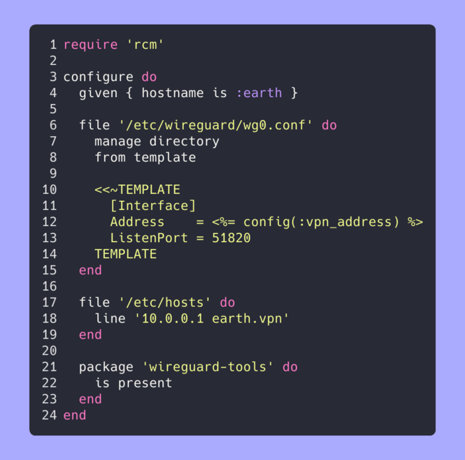

Project Showcase
Generated on: 2026-03-11
This page showcases my side projects, providing an overview of what each project does, its technical implementation, and key metrics. Each project summary includes information about the programming languages used, development activity, and licensing. The projects are ranked by score, which combines project size and recent activity.
Table of Contents
Overall Statistics
- 📦 Total Projects: 64
- 📊 Total Commits: 13,579
- 📈 Total Lines of Code: 302,300
- 📄 Total Lines of Documentation: 42,965
- 💻 Languages: Go (55.1%), Java (13.6%), C (6.4%), YAML (5.2%), HTML (4.9%), Perl (4.2%), Shell (3.0%), C/C++ (1.4%), Ruby (1.0%), Config (1.0%), HCL (0.9%), CSS (0.7%), Python (0.7%), JSON (0.5%), Make (0.4%), XML (0.4%), Haskell (0.2%), JavaScript (0.2%), TOML (0.1%)
- 📚 Documentation: Markdown (71.5%), Text (27.2%), LaTeX (1.3%)
- 🚀 Release Status: 42 released, 22 experimental (65.6% with releases, 34.4% experimental)
Projects
1. ior [#1(now) →#1(1w) ·n/a(2w) ·n/a(3w) ·n/a(4w)]
- 💻 Languages: Go (88.9%), C (10.6%), JSON (0.3%), C/C++ (0.2%)
- 📚 Documentation: Markdown (85.8%), Text (14.2%)
- 📊 Commits: 732
- 📈 Lines of Code: 55808
- 📄 Lines of Documentation: 3394
- 📅 Development Period: 2024-01-18 to 2026-03-11
- 🏆 Score: 1814.2 (combines code size and activity)
- ⚖️ License: No license found
- 🧪 Status: Experimental (no releases yet)

**🚧 PRE-ALPHA SOFTWARE:** This project is in a pre-alpha state and is intended for my own personal use only. Use at your own risk.
View on Codeberg
View on GitHub
---
2. timesamurai [#2(now) ·n/a(1w) ·n/a(2w) ·n/a(3w) ·n/a(4w)]
- 💻 Languages: Go (99.2%), Shell (0.6%), YAML (0.1%)
- 📚 Documentation: Markdown (100.0%)
- 📊 Commits: 91
- 📈 Lines of Code: 9493
- 📄 Lines of Documentation: 112
- 📅 Development Period: 2025-06-25 to 2026-03-07
- 🏆 Score: 470.7 (combines code size and activity)
- ⚖️ License: MIT
- 🏷️ Latest Release: v0.7.0 (2026-03-05)
**🚧 PRE-ALPHA SOFTWARE:** This project is in a pre-alpha state and is intended for my own personal use only. Use at your own risk.
View on Codeberg
View on GitHub
---
3. dotfiles [#3(now) →#3(1w) ·n/a(2w) ·n/a(3w) ·n/a(4w)]
- 💻 Languages: Shell (66.6%), CSS (10.9%), Config (10.1%), TOML (10.0%), JSON (1.1%), Ruby (1.0%), INI (0.2%)
- 📚 Documentation: Markdown (100.0%)
- 📊 Commits: 840
- 📈 Lines of Code: 2990
- 📄 Lines of Documentation: 5386
- 📅 Development Period: 2023-07-30 to 2026-03-10
- 🏆 Score: 389.4 (combines code size and activity)
- ⚖️ License: No license found
- 🧪 Status: Experimental (no releases yet)
dotfiles
View on Codeberg
View on GitHub
---
4. loadbars [#4(now) ↑#47(1w) ·n/a(2w) ·n/a(3w) ·n/a(4w)]
- 💻 Languages: Go (92.8%), Shell (7.2%)
- 📚 Documentation: Markdown (100.0%)
- 📊 Commits: 577
- 📈 Lines of Code: 6595
- 📄 Lines of Documentation: 328
- 📅 Development Period: 2010-11-05 to 2026-03-02
- 🏆 Score: 157.8 (combines code size and activity)
- ⚖️ License: Custom License
- 🏷️ Latest Release: v0.11.1 (2026-02-17)

View on Codeberg
View on GitHub
---
5. epimetheus [#5(now) ↓#4(1w) ·n/a(2w) ·n/a(3w) ·n/a(4w)]
- 💻 Languages: Go (85.2%), Shell (14.8%)
- 📚 Documentation: Markdown (100.0%)
- 📊 Commits: 4
- 📈 Lines of Code: 5199
- 📄 Lines of Documentation: 1736
- 📅 Development Period: 2026-02-07 to 2026-03-07
- 🏆 Score: 155.6 (combines code size and activity)
- ⚖️ License: No license found
- 🧪 Status: Experimental (no releases yet)

**🚧 PRE-ALPHA SOFTWARE:** This project is in a pre-alpha state and is intended for my own personal use only. Use at your own risk.
View on Codeberg
View on GitHub
---
6. conf [#6(now) ↓#5(1w) ·n/a(2w) ·n/a(3w) ·n/a(4w)]
- 💻 Languages: YAML (80.7%), Perl (9.9%), Shell (6.0%), Python (2.3%), Docker (0.7%), Config (0.2%), HTML (0.1%)
- 📚 Documentation: Markdown (97.1%), Text (2.9%)
- 📊 Commits: 791
- 📈 Lines of Code: 19132
- 📄 Lines of Documentation: 6572
- 📅 Development Period: 2021-12-28 to 2026-02-15
- 🏆 Score: 128.0 (combines code size and activity)
- ⚖️ License: No license found
- 🧪 Status: Experimental (no releases yet)
conf
====
View on Codeberg
View on GitHub
---
7. foostore [#7(now) →#7(1w) ·n/a(2w) ·n/a(3w) ·n/a(4w)]
- 💻 Languages: Go (98.4%), Shell (1.6%)
- 📚 Documentation: Markdown (100.0%)
- 📊 Commits: 110
- 📈 Lines of Code: 7020
- 📄 Lines of Documentation: 250
- 📅 Development Period: 2018-05-26 to 2026-03-07
- 🏆 Score: 119.7 (combines code size and activity)
- ⚖️ License: No license found
- 🏷️ Latest Release: v0.5.3 (2026-03-02)
**🚧 PRE-ALPHA SOFTWARE:** This project is in active early development, unstable, and intended for personal use. Expect bugs, breaking changes, missing safeguards, and possible data loss. Backward compatibility and upgrade paths are not guaranteed. Use at your own risk.
View on Codeberg
View on GitHub
---
8. scifi [#8(now) →#8(1w) ·n/a(2w) ·n/a(3w) ·n/a(4w)]
- 💻 Languages: JSON (35.9%), CSS (30.6%), JavaScript (29.6%), HTML (3.8%)
- 📚 Documentation: Markdown (100.0%)
- 📊 Commits: 23
- 📈 Lines of Code: 1664
- 📄 Lines of Documentation: 853
- 📅 Development Period: 2026-01-25 to 2026-01-27
- 🏆 Score: 70.4 (combines code size and activity)
- ⚖️ License: No license found
- 🧪 Status: Experimental (no releases yet)
Sci-Fi Books Showcase
View on Codeberg
View on GitHub
---
9. log4jbench [#9(now) →#9(1w) ·n/a(2w) ·n/a(3w) ·n/a(4w)]
- 💻 Languages: Java (78.9%), XML (21.1%)
- 📚 Documentation: Markdown (100.0%)
- 📊 Commits: 4
- 📈 Lines of Code: 774
- 📄 Lines of Documentation: 119
- 📅 Development Period: 2026-01-09 to 2026-01-09
- 🏆 Score: 46.7 (combines code size and activity)
- ⚖️ License: MIT
- 🧪 Status: Experimental (no releases yet)
View on Codeberg
View on GitHub
---
10. rcm [#10(now) →#10(1w) ·n/a(2w) ·n/a(3w) ·n/a(4w)]
- 💻 Languages: Ruby (99.6%), TOML (0.4%)
- 📚 Documentation: Markdown (100.0%)
- 📊 Commits: 109
- 📈 Lines of Code: 1719
- 📄 Lines of Documentation: 778
- 📅 Development Period: 2024-12-05 to 2026-03-02
- 🏆 Score: 32.1 (combines code size and activity)
- ⚖️ License: Custom License
- 🏷️ Latest Release: v0.1.1 (2026-03-01)

RCM - Ruby Configuration Management
View on Codeberg
View on GitHub
---
11. yoga [#11(now) ↑#12(1w) ·n/a(2w) ·n/a(3w) ·n/a(4w)]
- 💻 Languages: Go (69.1%), HTML (30.9%)
- 📚 Documentation: Markdown (100.0%)
- 📊 Commits: 17
- 📈 Lines of Code: 6498
- 📄 Lines of Documentation: 196
- 📅 Development Period: 2025-10-01 to 2026-03-07
- 🏆 Score: 32.0 (combines code size and activity)
- ⚖️ License: No license found
- 🏷️ Latest Release: v0.4.0 (2026-01-28)

Yoga
View on Codeberg
View on GitHub
---
12. totalrecall [#12(now) ↑#14(1w) ·n/a(2w) ·n/a(3w) ·n/a(4w)]
- 💻 Languages: Go (99.0%), Shell (0.5%), YAML (0.4%)
- 📚 Documentation: Markdown (99.5%), Text (0.5%)
- 📊 Commits: 109
- 📈 Lines of Code: 13424
- 📄 Lines of Documentation: 377
- 📅 Development Period: 2025-07-14 to 2026-03-08
- 🏆 Score: 31.2 (combines code size and activity)
- ⚖️ License: MIT
- 🏷️ Latest Release: v0.8.3 (2026-03-08)

totalrecall - Bulgarian Anki Flashcard Generator
View on Codeberg
View on GitHub
---
13. gogios [#13(now) ↓#11(1w) ·n/a(2w) ·n/a(3w) ·n/a(4w)]
- 💻 Languages: Go (98.9%), JSON (0.6%), YAML (0.5%)
- 📚 Documentation: Markdown (94.9%), Text (5.1%)
- 📊 Commits: 109
- 📈 Lines of Code: 3875
- 📄 Lines of Documentation: 394
- 📅 Development Period: 2023-04-17 to 2026-02-16
- 🏆 Score: 30.0 (combines code size and activity)
- ⚖️ License: Custom License
- 🏷️ Latest Release: v1.4.1 (2026-02-16)

Gogios
View on Codeberg
View on GitHub
---
14. hexai [#14(now) ↓#2(1w) ·n/a(2w) ·n/a(3w) ·n/a(4w)]
- 💻 Languages: Go (66.1%), HTML (33.9%)
- 📚 Documentation: Markdown (100.0%)
- 📊 Commits: 377
- 📈 Lines of Code: 28986
- 📄 Lines of Documentation: 561
- 📅 Development Period: 2025-08-01 to 2026-01-30
- 🏆 Score: 28.1 (combines code size and activity)
- ⚖️ License: No license found
- 🏷️ Latest Release: v0.21.0 (2026-02-12)

Hexai
View on Codeberg
View on GitHub
---
15. perc [#15(now) ↓#13(1w) ·n/a(2w) ·n/a(3w) ·n/a(4w)]
- 💻 Languages: Go (100.0%)
- 📚 Documentation: Markdown (100.0%)
- 📊 Commits: 7
- 📈 Lines of Code: 452
- 📄 Lines of Documentation: 80
- 📅 Development Period: 2025-11-25 to 2025-11-25
- 🏆 Score: 24.8 (combines code size and activity)
- ⚖️ License: No license found
- 🏷️ Latest Release: v0.1.0 (2025-11-25)
perc
View on Codeberg
View on GitHub
---
16. tasksamurai [#16(now) →#16(1w) ·n/a(2w) ·n/a(3w) ·n/a(4w)]
- 💻 Languages: Go (99.8%), YAML (0.2%)
- 📚 Documentation: Markdown (100.0%)
- 📊 Commits: 235
- 📈 Lines of Code: 6567
- 📄 Lines of Documentation: 251
- 📅 Development Period: 2025-06-19 to 2026-03-05
- 🏆 Score: 24.8 (combines code size and activity)
- ⚖️ License: BSD-2-Clause
- 🏷️ Latest Release: v0.11.4 (2026-03-05)

Task Samurai
View on Codeberg
View on GitHub
---
17. gitsyncer [#17(now) ↓#15(1w) ·n/a(2w) ·n/a(3w) ·n/a(4w)]
- 💻 Languages: Go (92.9%), Shell (6.8%), JSON (0.4%)
- 📚 Documentation: Markdown (100.0%)
- 📊 Commits: 121
- 📈 Lines of Code: 10986
- 📄 Lines of Documentation: 2450
- 📅 Development Period: 2025-06-23 to 2026-03-11
- 🏆 Score: 22.5 (combines code size and activity)
- ⚖️ License: BSD-2-Clause
- 🏷️ Latest Release: v0.14.0 (2026-03-11)
GitSyncer
View on Codeberg
View on GitHub
---
18. foostats [#18(now) ↓#17(1w) ·n/a(2w) ·n/a(3w) ·n/a(4w)]
- 💻 Languages: Perl (100.0%)
- 📚 Documentation: Markdown (54.6%), Text (45.4%)
- 📊 Commits: 98
- 📈 Lines of Code: 1902
- 📄 Lines of Documentation: 423
- 📅 Development Period: 2023-01-02 to 2025-11-01
- 🏆 Score: 16.2 (combines code size and activity)
- ⚖️ License: Custom License
- 🏷️ Latest Release: v0.2.0 (2025-10-21)
foostats
View on Codeberg
View on GitHub
---
19. gos [#19(now) ↓#18(1w) ·n/a(2w) ·n/a(3w) ·n/a(4w)]
- 💻 Languages: Go (99.5%), JSON (0.2%), Shell (0.2%)
- 📚 Documentation: Markdown (100.0%)
- 📊 Commits: 402
- 📈 Lines of Code: 4143
- 📄 Lines of Documentation: 477
- 📅 Development Period: 2024-05-04 to 2026-02-28
- 🏆 Score: 15.6 (combines code size and activity)
- ⚖️ License: Custom License
- 🏷️ Latest Release: v1.2.4 (2026-02-17)

View on Codeberg
View on GitHub
---
20. timr [#20(now) ↓#19(1w) ·n/a(2w) ·n/a(3w) ·n/a(4w)]
- 💻 Languages: Go (96.0%), Shell (4.0%)
- 📚 Documentation: Markdown (100.0%)
- 📊 Commits: 32
- 📈 Lines of Code: 1538
- 📄 Lines of Documentation: 99
- 📅 Development Period: 2025-06-25 to 2026-01-02
- 🏆 Score: 14.7 (combines code size and activity)
- ⚖️ License: MIT
- 🏷️ Latest Release: v0.3.0 (2026-01-02)
timr
View on Codeberg
View on GitHub
---
21. dtail [#21(now) ↓#20(1w) ·n/a(2w) ·n/a(3w) ·n/a(4w)]
- 💻 Languages: Go (93.9%), JSON (2.8%), C (2.0%), Make (0.5%), C/C++ (0.3%), Config (0.2%), Shell (0.2%), Docker (0.1%)
- 📚 Documentation: Text (79.4%), Markdown (20.6%)
- 📊 Commits: 1104
- 📈 Lines of Code: 20091
- 📄 Lines of Documentation: 5674
- 📅 Development Period: 2020-01-09 to 2025-06-20
- 🏆 Score: 14.4 (combines code size and activity)
- ⚖️ License: Apache-2.0
- 🏷️ Latest Release: v4.3.3 (2024-08-23)

DTail
=====
View on Codeberg
View on GitHub
---
22. ds-sim [#22(now) ↓#21(1w) ·n/a(2w) ·n/a(3w) ·n/a(4w)]
- 💻 Languages: Java (98.9%), Shell (0.6%), CSS (0.5%)
- 📚 Documentation: Markdown (98.7%), Text (1.3%)
- 📊 Commits: 438
- 📈 Lines of Code: 25762
- 📄 Lines of Documentation: 3101
- 📅 Development Period: 2008-05-15 to 2025-06-27
- 🏆 Score: 13.3 (combines code size and activity)
- ⚖️ License: Custom License
- 🧪 Status: Experimental (no releases yet)

DS-Sim
View on Codeberg
View on GitHub
---
23. gemtexter [#23(now) ↓#22(1w) ·n/a(2w) ·n/a(3w) ·n/a(4w)]
- 💻 Languages: Shell (70.8%), CSS (26.2%), Config (1.8%), HTML (1.2%)
- 📚 Documentation: Text (76.1%), Markdown (23.9%)
- 📊 Commits: 480
- 📈 Lines of Code: 2489
- 📄 Lines of Documentation: 1180
- 📅 Development Period: 2021-05-21 to 2026-03-08
- 🏆 Score: 12.8 (combines code size and activity)
- ⚖️ License: GPL-3.0
- 🏷️ Latest Release: 3.0.0 (2024-10-01)
The Gemtexter blog engine and static site generator
===================================================
View on Codeberg
View on GitHub
---
24. wireguardmeshgenerator [#24(now) ↓#23(1w) ·n/a(2w) ·n/a(3w) ·n/a(4w)]
- 💻 Languages: Ruby (65.4%), YAML (34.6%)
- 📚 Documentation: Markdown (100.0%)
- 📊 Commits: 36
- 📈 Lines of Code: 563
- 📄 Lines of Documentation: 24
- 📅 Development Period: 2025-04-18 to 2026-01-20
- 🏆 Score: 9.3 (combines code size and activity)
- ⚖️ License: Custom License
- 🏷️ Latest Release: v1.0.0 (2025-05-11)
WireGuard Mesh Generator
View on Codeberg
View on GitHub
---
25. goprecords [#25(now) ↓#24(1w) ·n/a(2w) ·n/a(3w) ·n/a(4w)]
- 💻 Languages: Go (100.0%)
- 📚 Documentation: Markdown (100.0%)
- 📊 Commits: 118
- 📈 Lines of Code: 2855
- 📄 Lines of Documentation: 489
- 📅 Development Period: 2013-03-22 to 2026-03-08
- 🏆 Score: 8.4 (combines code size and activity)
- ⚖️ License: No license found
- 🏷️ Latest Release: v0.2.1 (2026-02-20)
goprecords - Global uptime records
View on Codeberg
View on GitHub
---
26. quicklogger [#26(now) ↓#25(1w) ·n/a(2w) ·n/a(3w) ·n/a(4w)]
- 💻 Languages: Go (96.4%), XML (1.8%), Shell (1.1%), TOML (0.7%)
- 📚 Documentation: Markdown (100.0%)
- 📊 Commits: 36
- 📈 Lines of Code: 1220
- 📄 Lines of Documentation: 78
- 📅 Development Period: 2024-01-20 to 2026-03-01
- 🏆 Score: 4.9 (combines code size and activity)
- ⚖️ License: MIT
- 🏷️ Latest Release: v0.1.0 (2026-03-01)

Quick logger
View on Codeberg
View on GitHub
---
- 💻 Languages: HCL (96.6%), Make (1.9%), YAML (1.5%)
- 📚 Documentation: Markdown (100.0%)
- 📊 Commits: 125
- 📈 Lines of Code: 2851
- 📄 Lines of Documentation: 52
- 📅 Development Period: 2023-08-27 to 2025-08-08
- 🏆 Score: 4.8 (combines code size and activity)
- ⚖️ License: MIT
- 🧪 Status: Experimental (no releases yet)
View on Codeberg
View on GitHub
---
28. sillybench [#28(now) ↓#27(1w) ·n/a(2w) ·n/a(3w) ·n/a(4w)]
- 💻 Languages: Go (90.9%), Shell (9.1%)
- 📚 Documentation: Markdown (100.0%)
- 📊 Commits: 5
- 📈 Lines of Code: 33
- 📄 Lines of Documentation: 3
- 📅 Development Period: 2025-04-03 to 2025-04-03
- 🏆 Score: 4.4 (combines code size and activity)
- ⚖️ License: No license found
- 🧪 Status: Experimental (no releases yet)
Silly Benchmark
View on Codeberg
View on GitHub
---
29. gorum [#29(now) ↓#28(1w) ·n/a(2w) ·n/a(3w) ·n/a(4w)]
- 💻 Languages: Go (91.3%), JSON (6.4%), YAML (2.3%)
- 📚 Documentation: Markdown (100.0%)
- 📊 Commits: 83
- 📈 Lines of Code: 1525
- 📄 Lines of Documentation: 17
- 📅 Development Period: 2023-04-17 to 2026-03-07
- 🏆 Score: 3.4 (combines code size and activity)
- ⚖️ License: Custom License
- 🧪 Status: Experimental (no releases yet)
Gorum
View on Codeberg
View on GitHub
---
30. geheim [#30(now) →#30(1w) ·n/a(2w) ·n/a(3w) ·n/a(4w)]
- 💻 Languages: Ruby (86.7%), Shell (13.3%)
- 📚 Documentation: Markdown (100.0%)
- 📊 Commits: 75
- 📈 Lines of Code: 822
- 📄 Lines of Documentation: 108
- 📅 Development Period: 2018-05-26 to 2026-03-07
- 🏆 Score: 2.5 (combines code size and activity)
- ⚖️ License: No license found
- 🏷️ Latest Release: v0.3.1 (2025-11-01)
geheim.rb
View on Codeberg
View on GitHub
---
31. docker-radicale-server [#31(now) →#31(1w) ·n/a(2w) ·n/a(3w) ·n/a(4w)]
- 💻 Languages: Make (57.5%), Docker (42.5%)
- 📚 Documentation: Markdown (100.0%)
- 📊 Commits: 5
- 📈 Lines of Code: 40
- 📄 Lines of Documentation: 3
- 📅 Development Period: 2023-12-31 to 2025-08-11
- 🏆 Score: 2.3 (combines code size and activity)
- ⚖️ License: No license found
- 🧪 Status: Experimental (no releases yet)
Radicale Docker image
View on Codeberg
View on GitHub
---
32. algorithms [#32(now) →#32(1w) ·n/a(2w) ·n/a(3w) ·n/a(4w)]
- 💻 Languages: Go (99.2%), Make (0.8%)
- 📚 Documentation: Markdown (100.0%)
- 📊 Commits: 82
- 📈 Lines of Code: 1728
- 📄 Lines of Documentation: 18
- 📅 Development Period: 2020-07-12 to 2023-04-09
- 🏆 Score: 1.9 (combines code size and activity)
- ⚖️ License: Custom License
- 🧪 Status: Experimental (no releases yet)
⚠️ **Notice**: This project appears to be finished, obsolete, or no longer maintained. Last meaningful activity was over 2 years ago. Use at your own risk.
Algorithms
==========
View on Codeberg
View on GitHub
---
33. randomjournalpage [#33(now) →#33(1w) ·n/a(2w) ·n/a(3w) ·n/a(4w)]
- 💻 Languages: Shell (94.1%), Make (5.9%)
- 📚 Documentation: Markdown (100.0%)
- 📊 Commits: 8
- 📈 Lines of Code: 51
- 📄 Lines of Documentation: 26
- 📅 Development Period: 2022-06-02 to 2024-04-20
- 🏆 Score: 1.7 (combines code size and activity)
- ⚖️ License: No license found
- 🧪 Status: Experimental (no releases yet)
⚠️ **Notice**: This project appears to be finished, obsolete, or no longer maintained. Last meaningful activity was over 2 years ago. Use at your own risk.
Read a random journal
View on Codeberg
View on GitHub
---
34. photoalbum [#34(now) →#34(1w) ·n/a(2w) ·n/a(3w) ·n/a(4w)]
- 💻 Languages: Shell (80.1%), Make (12.3%), Config (7.6%)
- 📚 Documentation: Markdown (100.0%)
- 📊 Commits: 153
- 📈 Lines of Code: 342
- 📄 Lines of Documentation: 39
- 📅 Development Period: 2011-11-19 to 2022-04-02
- 🏆 Score: 1.7 (combines code size and activity)
- ⚖️ License: No license found
- 🏷️ Latest Release: 0.5.0 (2022-02-21)
⚠️ **Notice**: This project appears to be finished, obsolete, or no longer maintained. Last meaningful activity was over 2 years ago. Use at your own risk.
photoalbum
View on Codeberg
View on GitHub
---
35. ioriot [#35(now) →#35(1w) ·n/a(2w) ·n/a(3w) ·n/a(4w)]
- 💻 Languages: C (55.5%), C/C++ (24.0%), Config (19.6%), Make (1.0%)
- 📚 Documentation: Markdown (100.0%)
- 📊 Commits: 50
- 📈 Lines of Code: 12420
- 📄 Lines of Documentation: 610
- 📅 Development Period: 2018-03-01 to 2020-01-22
- 🏆 Score: 1.5 (combines code size and activity)
- ⚖️ License: Apache-2.0
- 🏷️ Latest Release: 0.5.1 (2019-01-04)
⚠️ **Notice**: This project appears to be finished, obsolete, or no longer maintained. Last meaningful activity was over 2 years ago. Use at your own risk.

I/O Riot
Overview
<img src=doc/ioriot_small.png align=right />
...is an I/O benchmarking tool for Linux based operating systems which captures I/O operations on a (possibly production) server in order to replay the exact same I/O operations on a load test machine.
I/O Riot is operated in 5 steps:
1. Capture: Record all I/O operations over a given period of time to a capture log.
2. Initialize: Copy the log to a load test machine and initialize the load test environment.
3. Replay: Drop all OS caches and replay all I/O operations.
4. Analyze: Look at the OS and hardware stats (throughput, I/O ops, load average) from the run phase and draw conclusions. The aim is to identify possible I/O bottlenecks.
5. Repeat: Repeat steps 2-4 multiple times but adjust OS and hardware settings in order to improve I/O performance.
Examples of OS and hardware settings and adjustments:
- Change of system parameters (file system mount options, file system caching, file system type, file system creation flags).
- Replay the I/O at different speed(s).
- Replay the I/O with modified pattern(s) (e.g. remove reads from the replay journal).
- Replay the I/O on different types of hardware.
The file system fragmentation (depending on the file system type and utilisation) might affect I/O performance as well. Therefore, replaying the I/O will not give the exact same result as on a production system. But it provides a pretty good way to determine I/O bottlenecks. As a rule of thumb file system fragmentation will not be an issue, unless the file system begins to fill up. Modern file systems (such as Ext4) will slowly start to suffer from fragmentation and slow down then.
Benefits
In contrast to traditional I/O benchmarking tools, I/O Riot reproduces real production I/O, and does not rely on a pre-defined set of I/O operations.
Also, I/O Riot only requires a server machine for capturing and another server machine for replaying. A traditional load test environment would usually be a distributed system which can consist of many components and machines. Such a distributed system can become quite complex which makes it difficult to isolate possible I/O bottlenecks. For example in order to trigger I/O events a client application would usually have to call a remote server application. The remote server application itself would query a database and the database would trigger the actual I/O operations in Linux. Furthermore, it is not easy to switch forth and back between hardware and OS settings. For example without a backup and restore procedure a database would most likely be corrupt after reformatting the data partitions with a different file system type.
The benefits of I/O Riot are:
- It is easy to determine whether a new hardware type is suitable for an already existing application.
- It is easy to change OS and hardware for performance tests and optimizations.
- Findings can be applied to production machines in order to optimize OS configuration and to save hardware costs.
- Benchmarks are based on production I/O patterns and not on artificial I/O patterns.
- Log files can be modified to see whether a change in the application behavior would improve I/O performance (without actually touching the application code)
- Log files could be generated synthetically in order to find out how a new application would perform (even if there isn't any code for the new application yet)
- It identifies possible flaws in the applications (e.g. Java programs which produce I/O operations on the server machines). Findings can be reported to the corresponding developers so that changes can be introduced to improve the applications I/O performance.
- It captures I/O in Linux Kernel space (very efficient, no system slowdowns even under heavy I/O load)
- It replays I/O via a tool developed in C with as little overhead as possible.
Send in patches
Patches of any kind (bug fixes, new features...) are welcome! I/O Riot is new software and not everything might be perfect yet. Also, I/O Riot is used for a very specific use case at Mimecast. It may need tuning or extension for your use case. It will grow and mature over time.
This is also potentially a great tool just for analysing (not replaying) the I/O, therefore it would be a great opportunity to add more features related to that (e.g. more stats, filters, etc.).
Future work will also include file hole support and I/O support for memory mapped files.
How to install I/O Riot
I/O Riot depends on SystemTap and a compatible version of the Linux Kernel. To get started have a read through the [installation guide](doc/markdown/installation.md).
How to use I/O Riot
Check out the [I/O Riot usage guide](doc/markdown/usage.md) for a full usage workflow demonstration.
Appendix
Supported file systems
Currently I/O Riot supports replaying I/O on `ext2, ext3, ext4 and xfs`. However, it should be straightforward add additional file systems.
Supported syscalls
Currently, these file I/O related syscalls are supported (as of CentOS 7):
open
openat
lseek
llseek
fcntl
creat
write
writev
unlink
unlinkat
rename
renameat
renameat2
read
readv
readahead - Initial support only
readdir
readlink
readlinkat
fdatasync
fsync
sync_file_range - Initial support only
sync
syncfs
close
getdents
mkdir
rmdir
mkdirat
stat
statfs - Initial support only
statfs64 - Initial support only
fstatfs - Initial support only
fstatfs64 - Initial support only
lstat
fstat
fstatat
chmod
fchmodat
fchmod
chown
chown16
lchown
lchown16
fchown
fchown16
fchownat
mmap2 - Initial support only
mremap - Initial support only
munmap - Initial support only
msync - Initial support only
exit_group - To detect process termination (closing all open file handles)
Source code documentation
The documentation of the source code can be generated via the Doxygen Framework. To install doxygen run `sudo yum install doxygen and to generate the documentation run make doxygen in the top level source directory. Once done, the resulting documentation can be found in the doc/html subfolder of the project. It is worthwhile to start from ioriot/src/main.c` and read your way through. Functions are generally documented in the header files. Exceptions are static functions which don't have any separate declarations.
More
====
- [How to contribute](CONTRIBUTING.md)
- [Code of conduct](CODE_OF_CONDUCT.md)
- [License](LICENSE)
Credits
=======
- I/O Riot was created by **Paul Buetow** *<pbuetow@mimecast.com>*
- Thank you to **Vlad-Marian Marian** for creating the I/O Riot logo.
View on Codeberg
View on GitHub
---
36. ipv6test [#36(now) →#36(1w) ·n/a(2w) ·n/a(3w) ·n/a(4w)]
- 💻 Languages: Perl (65.8%), Docker (34.2%)
- 📚 Documentation: Markdown (100.0%)
- 📊 Commits: 22
- 📈 Lines of Code: 149
- 📄 Lines of Documentation: 21
- 📅 Development Period: 2011-07-09 to 2026-02-17
- 🏆 Score: 1.5 (combines code size and activity)
- ⚖️ License: Custom License
- 🧪 Status: Experimental (no releases yet)
IPv6 Test Website
View on Codeberg
View on GitHub
---
37. fype [#37(now) →#37(1w) ·n/a(2w) ·n/a(3w) ·n/a(4w)]
- 💻 Languages: C (77.3%), C/C++ (13.1%), HTML (7.5%), Make (2.1%)
- 📚 Documentation: Text (65.8%), LaTeX (20.5%), Markdown (13.7%)
- 📊 Commits: 120
- 📈 Lines of Code: 7904
- 📄 Lines of Documentation: 2774
- 📅 Development Period: 2008-05-15 to 2026-02-28
- 🏆 Score: 1.4 (combines code size and activity)
- ⚖️ License: Custom License
- 🧪 Status: Experimental (no releases yet)
Fype
View on Codeberg
View on GitHub
---
38. xerl [#38(now) ↑#42(1w) ·n/a(2w) ·n/a(3w) ·n/a(4w)]
- 💻 Languages: CSS (54.6%), XML (39.1%), Perl (4.0%), Make (2.2%)
- 📚 Documentation: Text (91.2%), Org (4.9%), Markdown (3.9%)
- 📊 Commits: 671
- 📈 Lines of Code: 815
- 📄 Lines of Documentation: 102
- 📅 Development Period: 2011-03-06 to 2021-11-02
- 🏆 Score: 1.4 (combines code size and activity)
- ⚖️ License: Custom License
- 🏷️ Latest Release: v1.0.0 (2018-12-22)
⚠️ **Notice**: This project appears to be finished, obsolete, or no longer maintained. Last meaningful activity was over 2 years ago. Use at your own risk.
xerl Host Templates
===================
View on Codeberg
View on GitHub
---
39. sway-autorotate [#39(now) ↓#38(1w) ·n/a(2w) ·n/a(3w) ·n/a(4w)]
- 💻 Languages: Shell (100.0%)
- 📚 Documentation: Markdown (100.0%)
- 📊 Commits: 8
- 📈 Lines of Code: 41
- 📄 Lines of Documentation: 17
- 📅 Development Period: 2020-01-30 to 2025-04-30
- 🏆 Score: 1.2 (combines code size and activity)
- ⚖️ License: GPL-3.0
- 🧪 Status: Experimental (no releases yet)
sway-autorotate
View on Codeberg
View on GitHub
---
40. staticfarm-apache-handlers [#40(now) →#40(1w) ·n/a(2w) ·n/a(3w) ·n/a(4w)]
- 💻 Languages: Perl (96.4%), Make (3.6%)
- 📚 Documentation: Text (100.0%)
- 📊 Commits: 4
- 📈 Lines of Code: 919
- 📄 Lines of Documentation: 16
- 📅 Development Period: 2015-01-02 to 2026-03-07
- 🏆 Score: 1.2 (combines code size and activity)
- ⚖️ License: No license found
- 🏷️ Latest Release: 1.1.3 (2015-01-02)
DEPRECATED
This project is no longer maintained. No further updates, bug fixes, or
feature additions will be made. Use at your own risk.
View on Codeberg
View on GitHub
---
41. mon [#41(now) ↓#39(1w) ·n/a(2w) ·n/a(3w) ·n/a(4w)]
- 💻 Languages: Perl (96.5%), Shell (1.8%), Make (1.2%), Config (0.4%)
- 📚 Documentation: Text (100.0%)
- 📊 Commits: 8
- 📈 Lines of Code: 5360
- 📄 Lines of Documentation: 793
- 📅 Development Period: 2015-01-02 to 2026-03-07
- 🏆 Score: 1.1 (combines code size and activity)
- ⚖️ License: No license found
- 🏷️ Latest Release: 1.0.1 (2015-01-02)
DEPRECATED
This project is no longer maintained. No further updates, bug fixes, or
feature additions will be made. Use at your own risk.
View on Codeberg
View on GitHub
---
42. guprecords [#42(now) ↓#29(1w) ·n/a(2w) ·n/a(3w) ·n/a(4w)]
- 💻 Languages: Raku (100.0%)
- 📊 Commits: 97
- 📈 Lines of Code: 195
- 📅 Development Period: 2013-03-22 to 2023-03-09
- 🏆 Score: 1.0 (combines code size and activity)
- ⚖️ License: No license found
- 🏷️ Latest Release: v1.0.0 (2023-04-29)
⚠️ **Notice**: This project appears to be finished, obsolete, or no longer maintained. Last meaningful activity was over 2 years ago. Use at your own risk.
guprecords: source code repository.
View on Codeberg
View on GitHub
---
43. pingdomfetch [#43(now) ↓#41(1w) ·n/a(2w) ·n/a(3w) ·n/a(4w)]
- 💻 Languages: Perl (97.3%), Make (2.7%)
- 📚 Documentation: Text (100.0%)
- 📊 Commits: 10
- 📈 Lines of Code: 1839
- 📄 Lines of Documentation: 416
- 📅 Development Period: 2015-01-02 to 2026-03-07
- 🏆 Score: 1.0 (combines code size and activity)
- ⚖️ License: No license found
- 🏷️ Latest Release: 1.0.2 (2015-01-02)
DEPRECATED
This project is no longer maintained. No further updates, bug fixes, or
feature additions will be made. Use at your own risk.
View on Codeberg
View on GitHub
---
44. fapi [#44(now) →#44(1w) ·n/a(2w) ·n/a(3w) ·n/a(4w)]
- 💻 Languages: Python (96.6%), Make (3.1%), Config (0.3%)
- 📚 Documentation: Text (98.3%), Markdown (1.7%)
- 📊 Commits: 222
- 📈 Lines of Code: 1681
- 📄 Lines of Documentation: 543
- 📅 Development Period: 2014-03-10 to 2026-03-07
- 🏆 Score: 0.8 (combines code size and activity)
- ⚖️ License: No license found
- 🏷️ Latest Release: 1.0.2 (2014-11-17)
DEPRECATED
This project is no longer maintained. No further updates, bug fixes, or
feature additions will be made. Use at your own risk.
View on Codeberg
View on GitHub
---
45. perl-c-fibonacci [#45(now) →#45(1w) ·n/a(2w) ·n/a(3w) ·n/a(4w)]
- 💻 Languages: C (80.4%), Make (19.6%)
- 📚 Documentation: Text (100.0%)
- 📊 Commits: 4
- 📈 Lines of Code: 51
- 📄 Lines of Documentation: 69
- 📅 Development Period: 2014-03-24 to 2022-04-23
- 🏆 Score: 0.8 (combines code size and activity)
- ⚖️ License: No license found
- 🧪 Status: Experimental (no releases yet)
⚠️ **Notice**: This project appears to be finished, obsolete, or no longer maintained. Last meaningful activity was over 2 years ago. Use at your own risk.
perl-c-fibonacci: source code repository.
View on Codeberg
View on GitHub
---
46. netcalendar [#46(now) →#46(1w) ·n/a(2w) ·n/a(3w) ·n/a(4w)]
- 💻 Languages: Java (83.0%), HTML (12.9%), XML (3.0%), CSS (0.8%), Make (0.2%)
- 📚 Documentation: Text (89.5%), Markdown (10.5%)
- 📊 Commits: 51
- 📈 Lines of Code: 17380
- 📄 Lines of Documentation: 949
- 📅 Development Period: 2009-02-07 to 2026-03-07
- 🏆 Score: 0.8 (combines code size and activity)
- ⚖️ License: GPL-2.0
- 🏷️ Latest Release: v0.1 (2009-02-08)

**⚠️ DEPRECATED:** This project is no longer maintained. No further updates, bug fixes, or feature additions will be made. Use at your own risk.
View on Codeberg
View on GitHub
---
47. gotop [#47(now) ↑#48(1w) ·n/a(2w) ·n/a(3w) ·n/a(4w)]
- 💻 Languages: Go (98.0%), Make (2.0%)
- 📚 Documentation: Markdown (60.0%), Text (40.0%)
- 📊 Commits: 58
- 📈 Lines of Code: 499
- 📄 Lines of Documentation: 10
- 📅 Development Period: 2015-05-24 to 2026-03-07
- 🏆 Score: 0.7 (combines code size and activity)
- ⚖️ License: No license found
- 🏷️ Latest Release: 0.1 (2015-06-01)
**⚠️ DEPRECATED:** This project is no longer maintained. No further updates, bug fixes, or feature additions will be made. Use at your own risk.
View on Codeberg
View on GitHub
---
48. rubyfy [#48(now) ↑#49(1w) ·n/a(2w) ·n/a(3w) ·n/a(4w)]
- 💻 Languages: Ruby (98.5%), JSON (1.5%)
- 📚 Documentation: Markdown (100.0%)
- 📊 Commits: 35
- 📈 Lines of Code: 273
- 📄 Lines of Documentation: 34
- 📅 Development Period: 2015-09-29 to 2026-03-07
- 🏆 Score: 0.7 (combines code size and activity)
- ⚖️ License: Apache-2.0
- 🏷️ Latest Release: 0 (2015-10-26)
**⚠️ DEPRECATED:** This project is no longer maintained. No further updates, bug fixes, or feature additions will be made. Use at your own risk.
View on Codeberg
View on GitHub
---
49. pwgrep [#49(now) ↑#50(1w) ·n/a(2w) ·n/a(3w) ·n/a(4w)]
- 💻 Languages: Shell (85.0%), Make (15.0%)
- 📚 Documentation: Text (75.0%), Markdown (25.0%)
- 📊 Commits: 143
- 📈 Lines of Code: 493
- 📄 Lines of Documentation: 28
- 📅 Development Period: 2009-09-27 to 2026-03-07
- 🏆 Score: 0.6 (combines code size and activity)
- ⚖️ License: No license found
- 🏷️ Latest Release: 0.9.3 (2014-06-14)
**⚠️ DEPRECATED:** This project is no longer maintained. No further updates, bug fixes, or feature additions will be made. Use at your own risk.
View on Codeberg
View on GitHub
---
50. awksite [#50(now) ↑#61(1w) ·n/a(2w) ·n/a(3w) ·n/a(4w)]
- 💻 Languages: AWK (72.1%), HTML (16.4%), Config (11.5%)
- 📚 Documentation: Markdown (50.0%), Text (50.0%)
- 📊 Commits: 4
- 📈 Lines of Code: 122
- 📄 Lines of Documentation: 12
- 📅 Development Period: 2011-01-27 to 2026-03-07
- 🏆 Score: 0.6 (combines code size and activity)
- ⚖️ License: No license found
- 🏷️ Latest Release: v0.2 (2011-01-27)
**⚠️ DEPRECATED:** This project is no longer maintained. No further updates, bug fixes, or feature additions will be made. Use at your own risk.
View on Codeberg
View on GitHub
---
51. jsmstrade [#51(now) ↑#52(1w) ·n/a(2w) ·n/a(3w) ·n/a(4w)]
- 💻 Languages: Java (76.0%), Shell (15.4%), XML (8.6%)
- 📚 Documentation: Markdown (100.0%)
- 📊 Commits: 21
- 📈 Lines of Code: 720
- 📄 Lines of Documentation: 8
- 📅 Development Period: 2008-06-21 to 2026-03-07
- 🏆 Score: 0.6 (combines code size and activity)
- ⚖️ License: Custom License
- 🏷️ Latest Release: v0.3 (2009-02-08)

**⚠️ DEPRECATED:** This project is no longer maintained. No further updates, bug fixes, or feature additions will be made. Use at your own risk.
View on Codeberg
View on GitHub
---
52. perldaemon [#52(now) ↓#51(1w) ·n/a(2w) ·n/a(3w) ·n/a(4w)]
- 💻 Languages: Perl (74.2%), Shell (22.2%), Config (3.6%)
- 📊 Commits: 111
- 📈 Lines of Code: 659
- 📅 Development Period: 2011-02-05 to 2022-04-21
- 🏆 Score: 0.6 (combines code size and activity)
- ⚖️ License: Custom License
- 🏷️ Latest Release: v1.4 (2022-04-29)
⚠️ **Notice**: This project appears to be finished, obsolete, or no longer maintained. Last meaningful activity was over 2 years ago. Use at your own risk.
TOC:
01. HELLO WORLD
02. QUICK START GUIDE
03. CONFIGURATION
04. HIGH RESOLUTION SCHEDULING TIME
05. WRITING YOUR OWN MODULES
View on Codeberg
View on GitHub
---
53. japi [#53(now) →#53(1w) ·n/a(2w) ·n/a(3w) ·n/a(4w)]
- 💻 Languages: Perl (78.3%), Make (21.7%)
- 📚 Documentation: Text (100.0%)
- 📊 Commits: 42
- 📈 Lines of Code: 286
- 📄 Lines of Documentation: 148
- 📅 Development Period: 2013-03-22 to 2026-03-07
- 🏆 Score: 0.6 (combines code size and activity)
- ⚖️ License: No license found
- 🏷️ Latest Release: 0.4.3 (2014-06-16)
DEPRECATED
This project is no longer maintained. No further updates, bug fixes, or
feature additions will be made. Use at your own risk.
View on Codeberg
View on GitHub
---
54. debroid [#54(now) ↑#57(1w) ·n/a(2w) ·n/a(3w) ·n/a(4w)]
- 💻 Languages: Shell (92.0%), Make (8.0%)
- 📚 Documentation: Markdown (100.0%)
- 📊 Commits: 17
- 📈 Lines of Code: 88
- 📄 Lines of Documentation: 150
- 📅 Development Period: 2015-06-18 to 2026-03-07
- 🏆 Score: 0.5 (combines code size and activity)
- ⚖️ License: No license found
- 🧪 Status: Experimental (no releases yet)

**⚠️ DEPRECATED:** This project is no longer maintained. No further updates, bug fixes, or feature additions will be made. Use at your own risk.
View on Codeberg
View on GitHub
---
55. perl-poetry [#55(now) ↓#54(1w) ·n/a(2w) ·n/a(3w) ·n/a(4w)]
- 💻 Languages: Perl (100.0%)
- 📚 Documentation: Markdown (100.0%)
- 📊 Commits: 2
- 📈 Lines of Code: 191
- 📄 Lines of Documentation: 8
- 📅 Development Period: 2014-03-24 to 2014-03-24
- 🏆 Score: 0.5 (combines code size and activity)
- ⚖️ License: No license found
- 🧪 Status: Experimental (no releases yet)
⚠️ **Notice**: This project appears to be finished, obsolete, or no longer maintained. Last meaningful activity was over 2 years ago. Use at your own risk.
perl-poetry
===========
View on Codeberg
View on GitHub
---
56. muttdelay [#56(now) ↓#55(1w) ·n/a(2w) ·n/a(3w) ·n/a(4w)]
- 💻 Languages: Make (47.1%), Shell (46.3%), Vim Script (5.9%), Config (0.7%)
- 📚 Documentation: Text (100.0%)
- 📊 Commits: 42
- 📈 Lines of Code: 136
- 📄 Lines of Documentation: 100
- 📅 Development Period: 2013-03-22 to 2026-03-07
- 🏆 Score: 0.5 (combines code size and activity)
- ⚖️ License: No license found
- 🏷️ Latest Release: 0.2.0 (2014-07-05)
DEPRECATED
This project is no longer maintained. No further updates, bug fixes, or
feature additions will be made. Use at your own risk.
View on Codeberg
View on GitHub
---
57. netdiff [#57(now) ↓#56(1w) ·n/a(2w) ·n/a(3w) ·n/a(4w)]
- 💻 Languages: Shell (52.2%), Make (46.3%), Config (1.5%)
- 📚 Documentation: Text (100.0%)
- 📊 Commits: 43
- 📈 Lines of Code: 134
- 📄 Lines of Documentation: 110
- 📅 Development Period: 2013-03-22 to 2026-03-07
- 🏆 Score: 0.5 (combines code size and activity)
- ⚖️ License: No license found
- 🏷️ Latest Release: 0.1.5 (2014-06-22)
DEPRECATED
This project is no longer maintained. No further updates, bug fixes, or
feature additions will be made. Use at your own risk.
View on Codeberg
View on GitHub
---
58. hsbot [#58(now) →#58(1w) ·n/a(2w) ·n/a(3w) ·n/a(4w)]
- 💻 Languages: Haskell (98.5%), Make (1.5%)
- 📊 Commits: 81
- 📈 Lines of Code: 601
- 📅 Development Period: 2009-11-22 to 2026-03-07
- 🏆 Score: 0.5 (combines code size and activity)
- ⚖️ License: Custom License
- 🧪 Status: Experimental (no releases yet)
DEPRECATED:
View on Codeberg
View on GitHub
---
59. dyndns [#59(now) ↑#62(1w) ·n/a(2w) ·n/a(3w) ·n/a(4w)]
- 💻 Languages: Shell (100.0%)
- 📚 Documentation: Text (100.0%)
- 📊 Commits: 4
- 📈 Lines of Code: 18
- 📄 Lines of Documentation: 53
- 📅 Development Period: 2014-03-24 to 2026-03-07
- 🏆 Score: 0.5 (combines code size and activity)
- ⚖️ License: No license found
- 🧪 Status: Experimental (no releases yet)
DEPRECATED
This project is no longer maintained. No further updates, bug fixes, or
feature additions will be made. Use at your own risk.
View on Codeberg
View on GitHub
---
60. cpuinfo [#60(now) ↓#59(1w) ·n/a(2w) ·n/a(3w) ·n/a(4w)]
- 💻 Languages: Shell (53.2%), Make (46.8%)
- 📚 Documentation: Text (100.0%)
- 📊 Commits: 28
- 📈 Lines of Code: 124
- 📄 Lines of Documentation: 75
- 📅 Development Period: 2010-11-05 to 2021-11-05
- 🏆 Score: 0.5 (combines code size and activity)
- ⚖️ License: No license found
- 🏷️ Latest Release: 1.0.2 (2014-06-22)
⚠️ **Notice**: This project appears to be finished, obsolete, or no longer maintained. Last meaningful activity was over 2 years ago. Use at your own risk.
NAME
cpuinfo - A small and humble tool to print out CPU data
View on Codeberg
View on GitHub
---
61. template [#61(now) ↓#60(1w) ·n/a(2w) ·n/a(3w) ·n/a(4w)]
- 💻 Languages: Make (89.2%), Shell (10.8%)
- 📚 Documentation: Text (100.0%)
- 📊 Commits: 23
- 📈 Lines of Code: 65
- 📄 Lines of Documentation: 232
- 📅 Development Period: 2013-03-22 to 2026-03-07
- 🏆 Score: 0.4 (combines code size and activity)
- ⚖️ License: No license found
- 🏷️ Latest Release: 0.0.0.0 (2013-03-22)
DEPRECATED
This project is no longer maintained. No further updates, bug fixes, or
feature additions will be made. Use at your own risk.
View on Codeberg
View on GitHub
---
62. vs-sim [#62(now) ↑#63(1w) ·n/a(2w) ·n/a(3w) ·n/a(4w)]
- 📚 Documentation: Markdown (100.0%)
- 📊 Commits: 412
- 📈 Lines of Code: 0
- 📄 Lines of Documentation: 7
- 📅 Development Period: 2008-05-15 to 2015-05-23
- 🏆 Score: 0.0 (combines code size and activity)
- ⚖️ License: No license found
- 🏷️ Latest Release: v1.0 (2008-08-24)
⚠️ **Notice**: This project appears to be finished, obsolete, or no longer maintained. Last meaningful activity was over 2 years ago. Use at your own risk.
vs-sim
======
View on Codeberg
View on GitHub
---
63. ychat [#63(now) ↓#43(1w) ·n/a(2w) ·n/a(3w) ·n/a(4w)]
- 📚 Documentation: Text (100.0%)
- 📊 Commits: 67
- 📈 Lines of Code: 0
- 📄 Lines of Documentation: 9
- 📅 Development Period: 2008-05-15 to 2013-12-15
- 🏆 Score: 0.0 (combines code size and activity)
- ⚖️ License: No license found
- 🏷️ Latest Release: yhttpd-0.7.2 (2013-04-06)
⚠️ **Notice**: This project appears to be finished, obsolete, or no longer maintained. Last meaningful activity was over 2 years ago. Use at your own risk.
ychat: source code repository.
View on Codeberg
View on GitHub
---
64. foo.zone [#64(now) ↓#6(1w) ·n/a(2w) ·n/a(3w) ·n/a(4w)]
- 📚 Documentation: Markdown (100.0%)
- 📊 Commits: 3643
- 📈 Lines of Code: 0
- 📄 Lines of Documentation: 23
- 📅 Development Period: 2021-05-21 to 2022-04-02
- 🏆 Score: 0.0 (combines code size and activity)
- ⚖️ License: No license found
- 🧪 Status: Experimental (no releases yet)
⚠️ **Notice**: This project appears to be finished, obsolete, or no longer maintained. Last meaningful activity was over 2 years ago. Use at your own risk.
The foo.zone internet site
===========================
View on Codeberg
View on GitHub